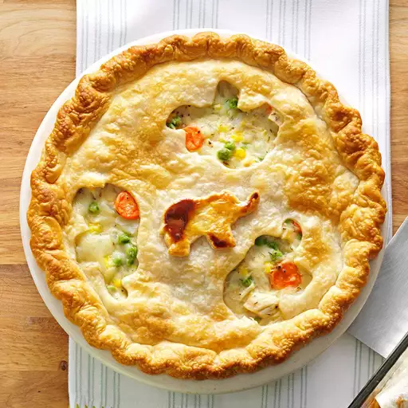

To-Die-For Chicken Pot Pie
Reciepe
- 6 carrots, chopped
- 6 stalks celery, chopped
- 1 cup fresh or frozen peas
- 1 cup fresh or frozen green beans, thawed
- 1 cup corn kernels
- 1 yellow onion, diced
- 1 cup quartered red potatoes
- 3 cups chicken broth
- 1 teaspoon thyme
- ½ teaspoon salt
- ½ teaspoon ground black pepper
- 4 (.87 ounce) packages dry chicken gravy mix
- 4 cups water
- 1 (15 ounce) package double crust ready-to-use pie crusts (such as Pillsbury®)
- 1 whole roasted chicken, bones and skin removed, meat shredded
- ¼ cup butter, cut into pieces
- 1 egg
- ¼ cup milk